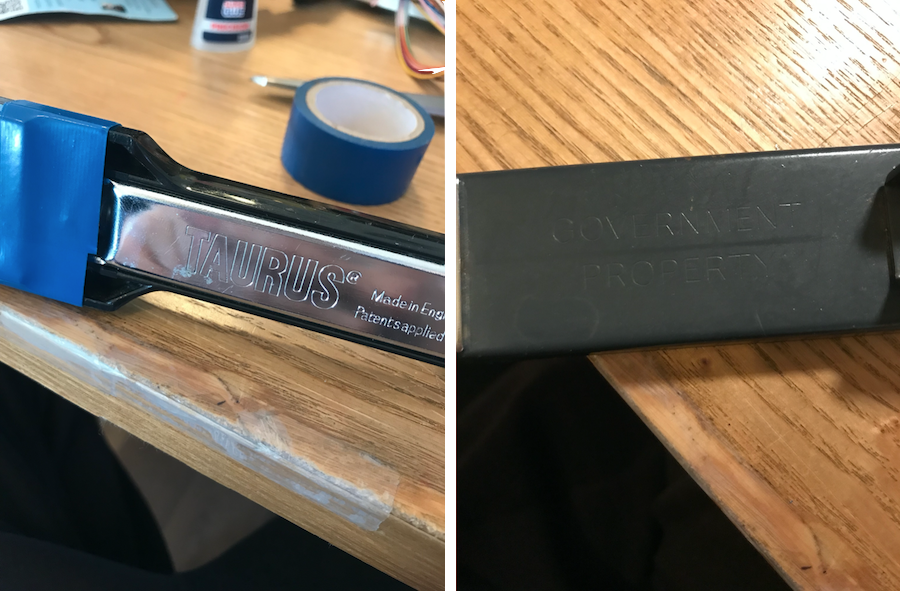
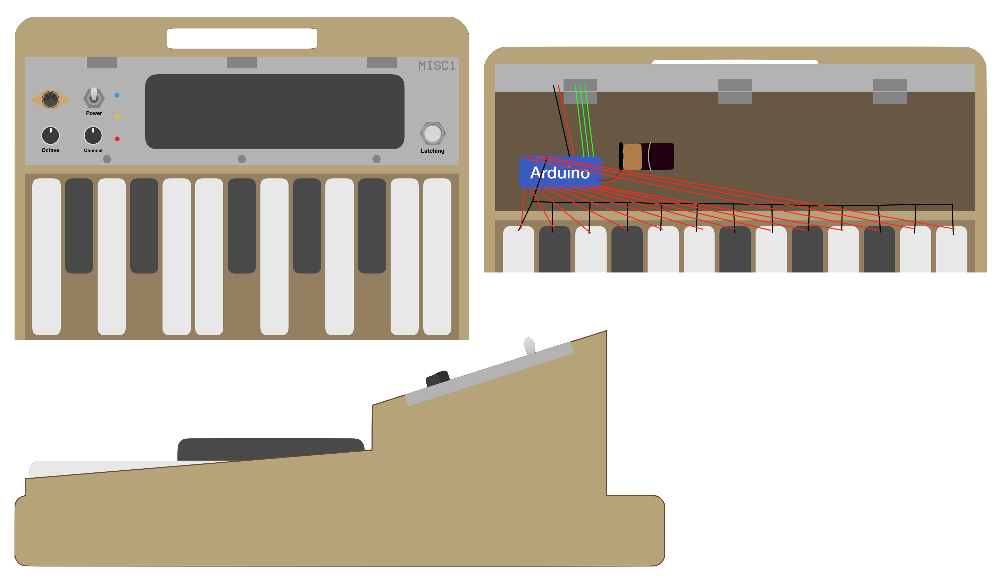
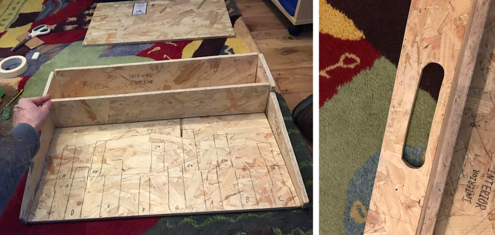
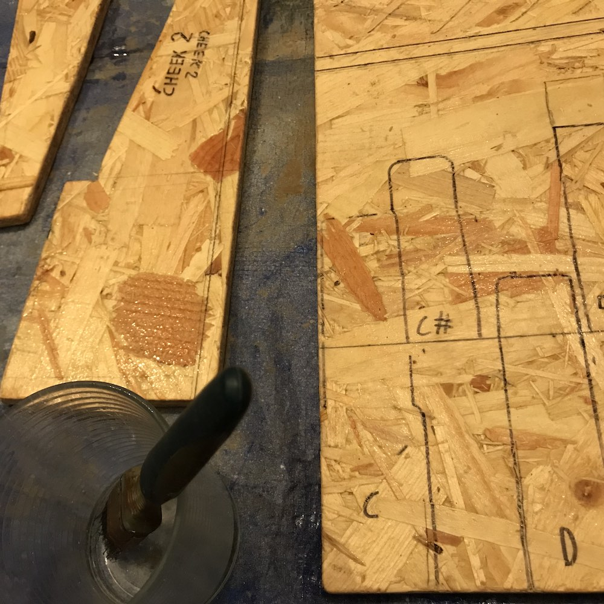

I recently (enough) MIDI-fied a set of organ foot pedals for a friend in a prog band, and in the interval between making the pedals and delivering them to him, I had a lot of fun using them myself, and decided to make myself a set. Unfortunately it turns out that organ foot pedals are quite expensive on their own- the only cheap way to get hold of a nice foot manual is to buy an entire electric home organ; they are sold for pennies by people who want them out of the house. Unfortunately I had nowhere to put one of these, and nothing to do with the rest of the organ once I'd taken out the foot pedals. I did however have a bag of staplers from my grandfather's workshop, which seem to work quite nicely as individual pedals in that they are well-built, rated for a good few cycles, and are of a decent size for foot operation. A somewhat silly idea then came to me.
The following was written as I did it and isn't all proof-read.

My staplers were gathered from a few different sources, the biggest being my grandfather's workshop. Following this, I found some more in second-hand shops, and a few other spots. After waiting patiently to find more, I ended up using some Christmas gift money to round out the number to 13, which is an octave plus one, and the same as MOOP1.

Using my shoes, I worked out the spacing required for the staplers- roughly 45mm of clearance on either side is required to reduce the mistake frequency to an acceptable level. I used stacked OK PLAY tiles to elevate the accidental keys by about 30mm, and shunted them backwards relative to the natural keys by about 110mm, which gave good clearance and an easy-to-recognise keyboard layout. Due to their different heights and lengths, the finished layout looks a bit janky, but that's OK with me.

The staplers basically serve as momentary switches, which they are ideal for given their hardwearing hinges and springs, and bulky builds. Furthermore, the metal hammer and the metal anvil are in most cases separated by a plastic body, giving two contacts that one only need attach wires to. This I did to about half of the staplers (the others have metal bodies, making the whole thing one big short-circuit, and a problem for another day), using superglue and nothing else, at least so far.
The wires can for the most part be led neatly out through the back of the staplers, keeping everything reasonably neat. I haven't soldered anything together yet because the angles are quite difficult, and the connections seem fairly robust already. Stress testing may show otherwise, but we're still in proof-of-concept land here.
The other thing that I've got to find is a baseplate, and a suitable way of mounting these staplers to it.

The solution to the problem of staplers with conductive bodies is a simple one. Electrical tape is applied over the anvil, and a new contact made of left over sheet metal from the MOOP1 enclosure is glued down. From there, the wires are run in much the same fashion as with the other staplers.
I found some interesting labels on the staplers, the best two being the coincidentally named Taurus stapler, and the Government Property stapler. In what may be (or probably isn't) a coincidence, it is the worst stapler out of them all.
The main building material for MISC1 is 11mm thick chipboard, picked up from Wickes. Some experimenting with stapler order yielded what I currently think is the best layout for minimising the number of mis-steps. I drew a line on the board as a guide for where to put the accidental keys, and another for where I reckon the back of the pedal set will be.
A general design idea is shown above (nothing to scale). I plan to construct a little wooden box to house the electronics, with a metal top as the wood is too thick for through-mount components. The large dark rectangular shape on the top of the front panel will be grip tape or something similar, so a small synth module can potentially be rested atop the foot pedals to create an independent unit. If possible, I additionally plan to give the device wooden sides to protect the staplers from bumps in transit. A handle will be added at the top, as a difficulty I had with MOOP1 was a lack of good hand-holds for carrying the thing around.
I think I can construct this with just wood glue and a bunch of nice long screws, but it's been many years since I've last done this sort of thing, so who knows?
Measure twice, cut once- hence the cardboard mockup of the control box and side pieces. I actually made an error sticking the stuff down, giving the whole right side a noticeable slant. Oh well, the general idea looks about right. Materials wise, I'm pretty sure that a single sheet of the 11mm chipboard should be strong enough (and hopefully the single sheet I bought will be enough for all the parts). A trip to Wickes shows that as well as the sheet aluminium I used last time, there's sheet copper, which looks lovely- although I'm pretty sure it won't look lovely in the long run. Then I could also use wood for the top surface maybe, if I can find something thin enough for through-mount components which also seems strong enough.
I also rearranged a few staplers, mostly putting taller ones in the accidental spots so that they rise further above the shorter staplers that you have to reach over to hit them. A quick test reveals improvements and necessitates re-labelling.

With all the section measurements sorted out and double-checked, I prepped the board for cutting. Plenty of measuring from different points to check that everything lined up. Happily, the side pieces can be arranged so as to eliminate awkward off-cuts and reduce waste.
For attaching the staplers, I have a two-part plan of glue and some cable ties, which I will loop through holes drilled on either side of each stapler. The cable ties should hold the things in place until the glue has tried, and then act as insurance once the glue's doing the main work.
My Dad and I cut the pieces today, mainly using a hand saw, and a jig saw for the fiddlier bits. To create the handle, two large holes were drilled, and then connected (badly) by the jig saw. Bad weather forced the work to stop, barring some sanding.
The cut parts fit together pretty well, but require a bit of sanding down in order to achieve the best possible fit. Further, the chipboard is a little flaky. I'm considering attempting to treat the wood somehow to reduce this issue- not sure how yet.
The accidental notes required about 30mm of elevation to be out of the way of the natural keys. This is provided by stacked cuts from the big bit of wood, which I cut out and glued together. In the absence of proper tools, hairbands were used to clamp the pieces.
All the accidental supports were sanded until they were safe to handle without a risk of splinters. A brief attempt to use an electric sander was made, followed by the swift conclusion that I like, use and need my fingers more than I could like, use and need the time saved sanding.
Once the pieces were all sanded down, I investigated treating the wood to reduce flaking. An idea I had was using dilute PVA glue, in the hopes that it would soak into the wood and then dry in place, binding the outside a bit more effectively and reducing the flakiness. The internet says that this (probably) works, so I gave it a try- it's drying overnight as I write this.